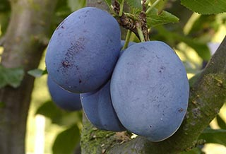

Samostatná právnická osoba
SEMPRA LITOMĚŘICE s.r.o.
Společnost se značkou SEMPRA působící v Litoměřicích. Nejde o pobočku ani šlechtitelskou stanici společnosti SEMPRA PRAHA a. s.

Veřejný rejstřík
Samostatná společnost
SEMPRA LITOMĚŘICE s.r.o. je samostatná právnická osoba se sídlem v Litoměřicích.
Pro obchodní nebo odbornou poptávku používejte kontakty samostatné společnosti, nikoli centrálu SEMPRA PRAHA.
| Obchodní firma | SEMPRA LITOMĚŘICE s.r.o. |
|---|---|
| IČO | 25021621 |
| Sídlo | Českolipská 917/6, Předměstí, 412 01 Litoměřice |
| Právní forma | Společnost s ručením omezeným |
Údaje lze ověřit v ARES ↗.